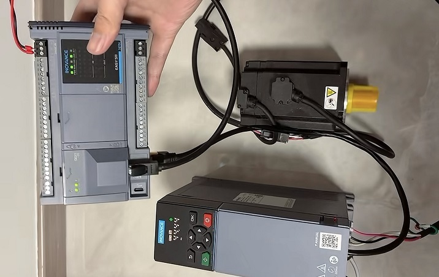

Industrial News

Cut Communication Delay! Dazhong Servo Drives for Real-Time Sync

In industrial automation production, communication delay is a key issue restricting productivity improvement — delayed command response and misalignment of multi-axis coordination not only reduce production accuracy, but also lead to efficiency loss and increased costs. As a professional Chinese supplier and manufacturer, Dazhong Electric Motor Tech has been deeply engaged in the servo drive field, launching high-quality high-speed servo drives, including core models EtherCAT Bus-type Drive (YKB300) and Pulse-type Drive (ZKSY830ABS). They solve delay problems through bus real-time synchronization and pulse precise control technologies respectively, balancing energy efficiency and stable performance, helping enterprises break free from productivity bottlenecks, build global partnerships, and provide customized production and full-process services.
I. Communication Delay ≠ Unsolvable! The Invisible Loss Culprit of Industrial Productivity
1.1 Core Harms of Communication Delay: From Precision Deviation to Productivity Shrinkage
In automated scenarios such as robotics, CNC machine tools, and precision assembly, the communication delay of servo drives seems minor, but it can trigger a chain of problems: a 1ms delay in command transmission may cause multi-axis coordination errors to exceed the allowable range, leading to an increase in product scrap rate; in high-frequency start-stop scenarios, delay can cause equipment idling and beat disorder, with a daily productivity loss of 5%-15%. Especially in the field of high-end manufacturing, a tiny delay may even affect the normal operation of the entire production line, causing mass production failures and unnecessary economic losses to enterprises.
Traditional servo drives are mostly difficult to achieve real-time command response due to insufficient bus protocol adaptation and backward control algorithms, becoming a "stumbling block" to industrial upgrading. Choosing a high-performance servo drive has become the key for enterprises to solve productivity difficulties. With years of technical accumulation, Dazhong Electric Motor Tech has launched high-speed servo products tailored to multiple scenarios. Among them, the EtherCAT Bus-type Drive (YKB300) accurately meets the low-latency and multi-axis coordination needs of high-end manufacturing, while the Pulse-type Drive (ZKSY830ABS) is suitable for the upgrading of small and medium-sized automation equipment and traditional production lines, achieving high-precision positioning with pulse control advantages, balancing convenience and stability.
1.2 Upgraded Industry Demand: Enterprises Urgently Need "Low-Latency + High-Stability" Solutions
Surveys show that 80% of manufacturing enterprises report that communication delay of servo drives is one of the main factors affecting productivity. At the same time, enterprises' requirements for products have evolved from "usable" to "easy to use" — not only requiring high-quality stable operation, but also energy efficiency to reduce energy consumption, and customized production to adapt to their own production lines. This also puts higher requirements on the technical strength of Chinese suppliers. Whether it is the production line upgrading of small and medium-sized manufacturing enterprises or the global productivity layout of large multinational enterprises, a servo drive with both performance, quality and adaptability is needed. The dual-model layout of EtherCAT Bus-type Drive (YKB300) and Pulse-type Drive (ZKSY830ABS) can fully meet the differentiated needs of different scenarios.
II. Dazhong High-Speed Servo Drives: Real-Time Synchronization to Solve Delay Problems
2.1 Core Advantage: Real-Time Synchronization Technology to Eliminate Delay Loss
As a manufacturer focusing on servo drive R&D, Dazhong Electric Motor Tech has broken through traditional technical bottlenecks and built a dual-core model product matrix: the EtherCAT Bus-type Drive (YKB300) under the high-speed servo drive is equipped with the EtherCAT industrial bus protocol and adopts the Beckhoff officially authorized ESC slave controller, realizing the "fly-by" mechanism, which can directly read and write target data without storing complete messages. The communication cycle is as low as 250μs, which is an order of magnitude shorter than traditional drives, far exceeding the industry average; the Pulse-type Drive (ZKSY830ABS) adopts a high-precision pulse control mode, supporting multiple control methods such as pulse/direction and CW/CCW, with fast command response speed, communication delay as low as 300μs, high positioning accuracy and convenient operation, suitable for the precise control needs of small and medium-sized automation equipment.
Relying on Distributed Clock (DC) technology, the EtherCAT Bus-type Drive (YKB300) can achieve nanosecond-level synchronization, with a position deviation of no more than ±1 micron in multi-axis coordination control, completely solving the problems of command delay and coordination misalignment, making the equipment response "zero delay" and directly increasing productivity by 10%-20%. At the same time, it supports multi-axis linkage control, enabling up to 32-axis synchronous operation, suitable for complex automated production lines; the Pulse-type Drive (ZKSY830ABS) achieves micron-level positioning through precise pulse control, effectively solving the delay and positioning deviation problems of traditional pulse drives, suitable for high-precision scenarios such as engraving machines, CNC systems and sorting machinery, balancing efficiency and convenience, and perfectly meeting the production needs of different enterprises.
2.2 Quality Assurance: High-Quality Standards to Lay a Solid Foundation for Operation
As a reliable Chinese supplier, Dazhong adheres to strict standards to build products. The core components of its servo drives such as EtherCAT Bus-type Drive (YKB300) and Pulse-type Drive (ZKSY830ABS) are selected from high-quality components, and have passed multiple rigorous tests including 72-hour continuous full-load testing, high and low temperature environment testing, and anti-interference testing. The protection level reaches IP67, which can easily adapt to complex industrial environments such as dust, oil mist, high and low temperatures, with a failure rate of less than 0.5%, far lower than the industry average of 3%.
Both core models adopt 32-bit DSP processors, integrate Space Vector Pulse Width Modulation (SVPWM) technology, increase voltage utilization by more than 15%, and are equipped with adaptive filters to effectively eliminate mechanical resonance, balancing operational stability and control accuracy. In addition, both the EtherCAT Bus-type Drive (YKB300) and Pulse-type Drive (ZKSY830ABS) have complete protection functions, including overcurrent, overvoltage, overload, overheating and other multiple protections, which can effectively extend the service life of equipment, reduce enterprise equipment maintenance costs, and adapt to the strict requirements of different levels of manufacturing.
2.3 Energy-Saving Advantage: Energy Efficiency Upgrade to Reduce Operating Costs
Dazhong high-speed servo drives integrate efficient energy efficiency optimization algorithms. Among them, the regenerative braking energy recovery efficiency of the EtherCAT Bus-type Drive (YKB300) reaches 85%, and that of the Pulse-type Drive (ZKSY830ABS) reaches 80%. Both products save about 30% energy compared with traditional products, which can greatly reduce enterprise electricity expenses in long-term use. For example, after a certain auto parts manufacturing enterprise introduced the YKB300 model, it saved nearly 10,000 yuan per month only in the energy consumption of the servo system; after a small CNC enterprise adopted the ZKSY830ABS, its energy consumption decreased by 28% and productivity increased by 12% compared with before.
At the same time, the drive adopts a low-loss circuit design, reducing no-load loss by 20%, achieving a dual breakthrough of "energy saving + high efficiency" while ensuring high performance. In addition, the product also supports energy consumption monitoring function, which can feedback energy consumption data in real time, helping enterprises accurately grasp energy consumption status, further optimize production processes, assist enterprises in achieving green production, and conform to the development trend of global low-carbon manufacturing.
III. Dazhong: More Than a Manufacturer, But a Full-Process Partner
3.1 Customized Production: On-Demand Customization to Adapt to Full-Industry Scenarios
Different industries and production lines have significant differences in the demand for servo drives. Relying on a professional R&D team, Dazhong Electric Motor Tech provides customized production services. It can customize exclusive servo drive solutions for products such as EtherCAT Bus-type Drive (YKB300) and Pulse-type Drive (ZKSY830ABS) according to customers' productivity requirements, equipment models and control accuracy, breaking the adaptation limitations of standardized products.
Among them, the YKB300 is suitable for complex scenarios such as main rolling mill control in the steel industry (e.g., adaptation to Shougang and Baosteel projects), nanometer-level positioning of semiconductor equipment, and robot joint control; the ZKSY830ABS is suitable for scenarios such as small and medium-sized CNC equipment, engraving machines and sorting machinery, which can be quickly put into use without complex debugging, adapting to the upgrading needs of traditional production lines. For the strict requirements of special industries, the R&D team can also optimize the protection level, control accuracy and energy consumption performance of the two products, making the products truly meet the customer's production needs, exert their maximum value, and help enterprises improve their core competitiveness.
3.2 Global Partnership: Global Layout to Empower Global Manufacturing
As a Chinese supplier with global competitiveness, Dazhong actively expands global partnerships. Its products such as EtherCAT Bus-type Drive (YKB300) and Pulse-type Drive (ZKSY830ABS) are exported to more than 20 countries and regions around the world, covering major markets such as Europe, the Americas, Southeast Asia and the Middle East, and has established long-term and stable cooperative relations with many internationally renowned manufacturing enterprises.
To better serve global customers, Dazhong has set up service outlets in many overseas regions, providing standardized and localized products and services, including product selection guidance, installation and commissioning, technical training and after-sales maintenance, breaking geographical restrictions, solving the service concerns of overseas customers, helping global manufacturing enterprises achieve automation upgrading, and jointly building an efficient and energy-saving production system.
3.3 Comprehensive Services: Worry-Free from Selection to After-Sales
Dazhong deeply understands the importance of high-quality services for enterprises, and has established a full-process service system to provide comprehensive service support for all products including EtherCAT Bus-type Drive (YKB300) and Pulse-type Drive (ZKSY830ABS). Before sales, professional engineers will deeply understand the customer's production scenarios and needs, provide accurate selection guidance, and avoid productivity loss and cost waste caused by improper selection; during sales, arrange technical personnel to provide on-site installation and commissioning, operation and training services to ensure that the equipment is quickly put into use and shorten the production line upgrading cycle.
After sales, it provides 7×24-hour technical support and fault maintenance services. For domestic customers, the fault response time is ≤2 hours, and on-site maintenance is ≤24 hours; for overseas customers, it provides remote guidance, and can arrange engineers to visit on site if necessary. In addition, Dazhong also provides value-added services such as regular inspections and equipment maintenance guidance, helping enterprises extend the service life of equipment, ensure the stable operation of production lines, and make customers worry-free.
IV. FAQ Tips: Quick Answers to Common Questions
1. Q: What communication delay problems can Dazhong high-speed servo drives solve?
A: It can solve problems such as delayed command response, multi-axis coordination misalignment, and high-frequency start-stop idling. Among them, the communication cycle of EtherCAT Bus-type Drive (YKB300) is as low as 250μs, achieving nanosecond-level synchronization; the communication delay of Pulse-type Drive (ZKSY830ABS) is as low as 300μs, and precise pulse control can eliminate productivity loss caused by delay.
2. Q: As a Chinese supplier, what quality guarantees do your products have?
A: Core components are selected from high-quality components and have passed multiple rigorous tests. Products such as EtherCAT Bus-type Drive (YKB300) and Pulse-type Drive (ZKSY830ABS) have a failure rate of less than 0.5%, a protection level of IP67, meet international high-quality standards, and provide quality guarantee services.
3. Q: What are the specific manifestations of the product's energy efficiency advantages?
A: The regenerative braking energy recovery efficiency reaches 80%-85%, saving 30% energy compared with traditional products, and reducing no-load loss by 20%. Among them, the YKB300 supports energy consumption monitoring, and the ZKSY830ABS is suitable for the energy-saving needs of small and medium-sized equipment, which can greatly reduce enterprise operating costs in long-term use.
4. Q: Do you support customized production? What is the cycle?
A: Yes, we support on-demand customization. We can customize solutions for products such as EtherCAT Bus-type Drive (YKB300) and Pulse-type Drive (ZKSY830ABS) according to customers' production lines, control accuracy and other needs. The regular customization cycle is 7-15 working days, and urgent orders can be shortened to 5 working days.
5. Q: How to establish a global partnership? What is the cooperation process?
A: Enterprises around the world can cooperate. The process is: demand communication → solution customization → sample testing → batch supply → after-sales support, with professional technical docking throughout the process. Products such as EtherCAT Bus-type Drive (YKB300) and Pulse-type Drive (ZKSY830ABS) can meet global compliance requirements.
6. Q: What industries are the servo drives suitable for?
A: They are widely used in many industries such as steel, semiconductor, robotics, CNC machine tools, photovoltaic, and petrochemical. The YKB300 can be adapted to complex scenarios such as multi-axis linkage and high-precision control, and the ZKSY830ABS is suitable for scenarios such as small and medium-sized CNC equipment, engraving machines and sorting machinery.
7. Q: How to guarantee after-sales service? What is the fault response time?
A: We provide 7×24-hour technical support. For domestic customers, the fault response time is ≤2 hours, and on-site maintenance is ≤24 hours; for overseas customers, we provide remote guidance, and can arrange engineers to visit on site if necessary, covering all products including YKB300 and ZKSY830ABS.
8. Q: What is the core competitiveness of your products compared with other manufacturers?
A: The core advantages lie in "low-latency real-time synchronization + high-quality stability + energy efficiency", with a dual-model layout of YKB300 (bus type) and ZKSY830ABS (pulse type) under the brand. At the same time, we provide customized production and comprehensive services with higher cost performance.
9. Q: Do the products meet international standards? Which countries can they be exported to?
A: They meet international and domestic standards such as IEC and GB, and can be exported to more than 20 countries and regions including Europe, the Americas and Southeast Asia. Both EtherCAT Bus-type Drive (YKB300) and Pulse-type Drive (ZKSY830ABS) support global compliance certification and are suitable for overseas market needs.
10. Q: How to select models? What parameters are needed?
A: Professional pre-sales engineers provide free model selection guidance. Customers only need to provide core parameters such as equipment power, control accuracy, communication protocol and application scenarios to recommend suitable products, including all series of products such as EtherCAT Bus-type Drive (YKB300) and Pulse-type Drive (ZKSY830ABS).